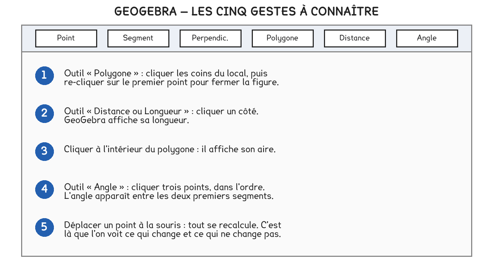

CAP Électricien · 1re année
L'ordinateur retrouve les mêmes nombres que le calcul à la main. Ce qu'il apporte, c'est de pouvoir déplacer un sommet et regarder ce qui bouge.
5 exercices · 5 items d'entraînement · 2 figures
Savoirs travaillés

La ligne à taper, exactement :
Polygone((0,0),(6,0),(6,2.5),(4,2.5),(4,4),(0,4))
puis, sur la ligne suivante, Périmètre(poly1).
Le point et la virgule n’ont pas le même rôle. Les décimales s’écrivent avec un point — 2.5 —, et la virgule sépare les deux coordonnées d’un point — (6, 2.5). Une virgule décimale, et le logiciel comprend un point de plus.
Exercice · GE
Quelle valeur GeoGebra affiche-t-il pour poly1 ?
Exercice · GE
Et pour Périmètre(poly1) ?
Ce que le logiciel apporte n’est pas le résultat, c’est le mouvement. On attrape un sommet, on le déplace : la forme change, l’aire affichée change, et le nombre de côtés, lui, ne change pas.
Sur un chantier, un angle droit se trace au mètre ruban avec trois longueurs : 3, 4 et 5.
C’est le théorème de Pythagore pris à l’envers : si les trois longueurs vérifient 3² + 4² = 5², alors l’angle est droit. On ne calcule rien sur le chantier, on mesure.
Exercice · GE
Dans Polygone((0,0),(4,0),(0,3)), quelle longueur le logiciel donne-t-il au troisième côté ?
Exercice · GE
Quel angle l’outil affiche-t-il au coin formé par les côtés de 3 m et 4 m ?
Le triangle 3-4-5 se trace avec un mètre ruban et rien d’autre. Sur un chantier, il remplace l’équerre — et il ne se dérègle pas.
Un seul problème, qui reprend toute la séquence. On le fait d’un bout à l’autre, comme un vrai : il n’y a pas d’indication de méthode en cours de route. À la fin, on produit son fichier de réponses.
Un local technique doit recevoir un sol technique. Il n’est pas rectangulaire : il porte un décrochement. Ses cotes, relevées sur place :
| Le côté | mur du fond | retour droit | décrochement | décrochement | mur du haut | mur de gauche |
|---|---|---|---|---|---|---|
| Longueur | 5,00 m | 2,00 m | 2,00 m | 1,50 m | 3,00 m | 3,50 m |
La question : « Quelle surface commander, et le mur de gauche est-il bien d’équerre ? »
Lire la situation
a) Dire pourquoi la formule L × l ne s’applique pas telle quelle à ce local.
b) Citer l’outil qui permet de vérifier un angle droit sans équerre.
Choisir la méthode
c) Proposer une façon de calculer la surface d’un local en L.
d) Dire quelles trois longueurs il faut mesurer pour vérifier un angle droit au mètre ruban.
Calculer
e) Découper le local en deux rectangles et calculer l’aire de chacun, puis l’aire totale.
f) Calculer le périmètre en additionnant les six côtés.
g) Vérifier, par le calcul, que 3, 4 et 5 forment bien un triangle rectangle.
Conclure
h) Dire pourquoi le trait de découpe n’a aucune existence sur le chantier, puis répondre à la question.
Série · GEOM
Exercice · GEOM
Expliquer en deux phrases pourquoi on peut découper ce local autrement et trouver la même aire.
Ce site rappelle la méthode. Aucun corrigé, rien n'est noté.